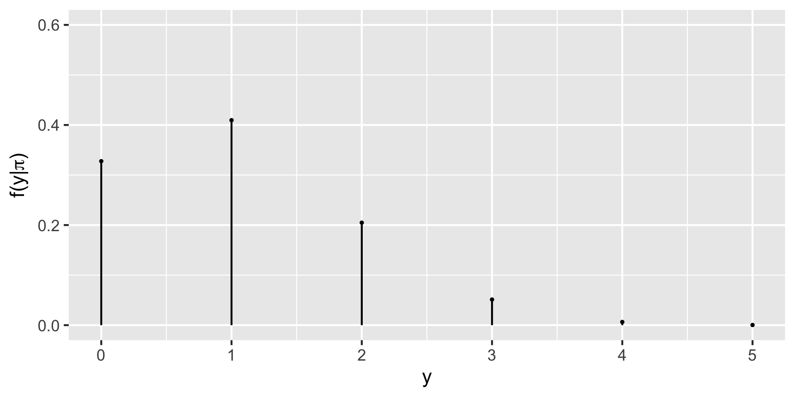
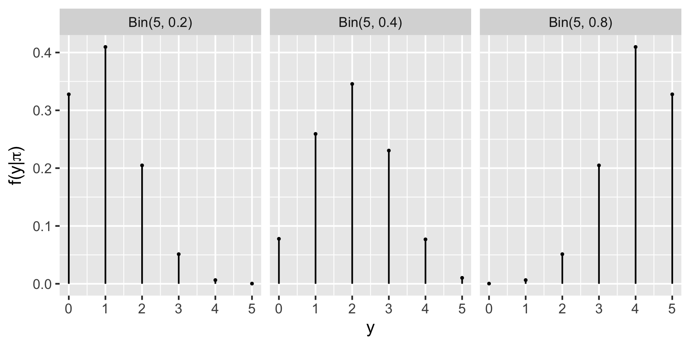
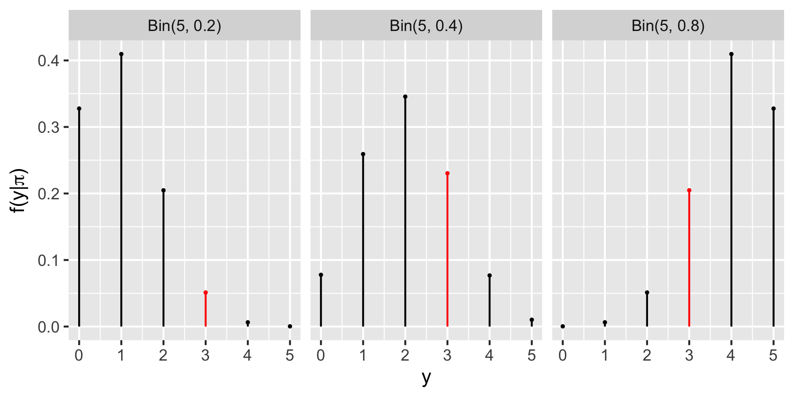
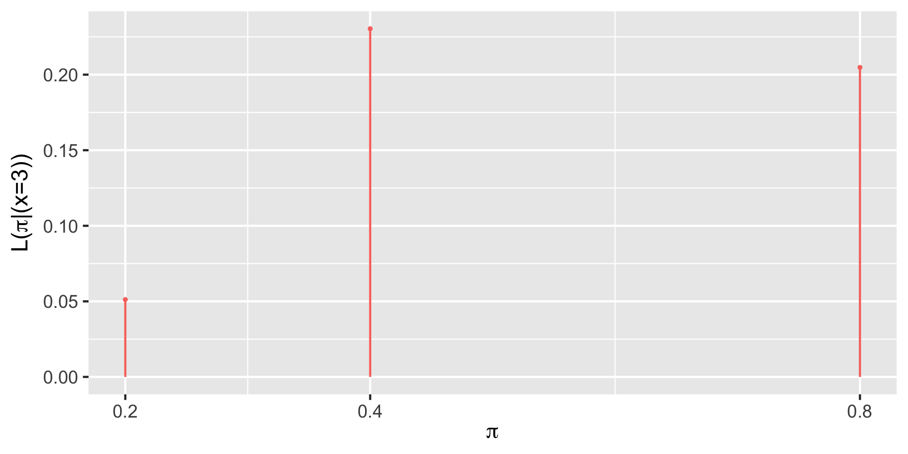

[1] 0.0064Bayesian Models for Random Variables
Dr. Mine Dogucu
Bayes’ Rule for Random Variables
The notes for this lecture are derived from Section 2.3 of the Bayes Rules! book
Notation
We will use Greek letters (eg: \(\pi, \beta, \mu\)) to denote our primary variables of interest.
We will use capital letters toward the end of the alphabet (eg: \(X, Y, Z\)) to denote random variables related to our data.
We denote an observed outcome of \(Y\) (a constant) using lower case \(y\).
Review: Discrete probability models
Let \(Y\) be a discrete random variable with probability mass function (pmf) \(f(y)\). Then the pmf defines the probability of any given \(y\), \(f(y) = P(Y = y)\), and has the following properties:
\(\sum_{\text{all } y} f(y) = 1\)
\(0 \le f(y) \le 1\) for all values of \(y\) in the range of \(Y\)
PhD admissions
Let Y represent a random variable that represents the number of applicants admitted to a PhD program which has received applications from 5 prospective students. That is \(\Omega_Y = \{0, 1, 2, 3, 4, 5\}\). We are interested in the parameter \(\pi\) which represents the probability of acceptance to this program. For demonstrative purposes, we will only consider three possible values of \(\pi\) as 0.2, 0.4, and 0.8.
Prior model for \(\pi\)
You are now a true Bayesian and decide to consult with an expert who knows the specific PhD program well and the following is the prior distribution the expert suggests you use in your analysis.
| π | 0.2 | 0.4 | 0.8 |
|---|---|---|---|
| f(π) | 0.7 | 0.2 | 0.1 |
The expert thinks that this is quite a hard-to-get-into program.
From prior to posterior
We have a prior model for \(\pi\) that is \(f(\pi)\).
In light of observed data \(y\) we can update our ideas about \(\pi\).
We will call this the posterior model \(f(\pi|y)\).
In order to do this update we will need data which we have not observed yet.
Consider data
For the two scenarios below fill out the table (twice). For now, it is OK to use your intuition to guesstimate.
| π | 0.2 | 0.4 | 0.8 | |
|---|---|---|---|---|
| f(π) | 0.7 | 0.2 | 0.1 | |
| Scenario 1 | f(π|y) | |||
| Scenario 2 | f(π|y) |
Scenario 1: What if this program accepted five of the five applicants?
Scenario 2: What if this program accepted none of the five applicants?
Intuition vs. Reality
Your intuition may not be Bayesian if - you have only relied on the prior model to decide on the posterior model. - you have only relied on the data to decide on the posterior model.
Bayesian statistics is a balancing act and we will take both the prior and the data to get to the posterior. Don’t worry if your intuition was wrong. As we practice more, you will learn to think like a Bayesian.
Likelihood
We do not know \(\pi\) but for now let’s consider one of the three possibilities for \(\pi = 0.2\). If \(\pi\) were 0.2 what is the probability that we would observe 4 of the 5 applicants get admitted to the program? Would you expect this probability to be high or low?
Can you calculate an exact value?
The Binomial Model
Let random variable \(Y\) be the number of successes (eg: number of accepted applicants) in \(n\) trials (eg: applications). Assume that the number of trials is fixed, the trials are independent, and the probability of success (eg: probability of acceptance) in each trial is \(\pi\). Then the dependence of \(Y\) on \(\pi\) can be modeled by the Binomial model with parameters \(n\) and \(\pi\). In mathematical notation:
\[Y | \pi \sim \text{Bin}(n,\pi) \]
then, the Binomial model is specified by a conditional pmf:
\[f(y|\pi) = {n \choose y} \pi^y (1-\pi)^{n-y} \;\; \text{ for } y \in \{0,1,2,\ldots,n\}\]
The Binomial Model
\(f(y = 4 | \pi = 0.2) = {5 \choose 4} 0.2^40.8^1 = \frac{5!}{(5-4)! 4!} 0.2^40.8^1= 0.0064\)
or using R
The Binomial Model
If \(\pi\) were 0.2 what is the probability that we would observe 3 of the 5 applicants get admitted to the program? Would you expect this probability to be high or low?
\(f(x = 3 | \pi = 0.2) = {5 \choose 3} 0.2^30.8^2 = \frac{5!}{(5-3)! 3!} 0.2^30.8^2 =0.0512\)
or using R
The Binomial Model
Rather than doing this one-by-one we can let R consider all different possible observations of y, 0 through 5.
Probabilities for \(y_is\) if \(\pi = 0.2\)
Other possibilities for \(\pi\)
Data
The admissions committee has announced that they have accepted 3 of the 5 applicants.
Data
Likelihood
Likelihood
Likelihood
| π | 0.2 | 0.4 | 0.8 |
|---|---|---|---|
| L(π | y = 3) | 0.0512 | 0.2304 | 0.2048 |
Likelihood
The likelihood function \(L(\pi|y=3)\) is the same as the conditional probability mass function \(f(y|\pi)\) at the observed value \(y = 3\).
pmf vs likelihood
When \(\pi\) is known, the conditional pmf \(f(\cdot | \pi)\) allows us to compare the probabilities of different possible values of data \(Y\) (eg: \(y_1\) or \(y_2\)) occurring with \(\pi\):
\[f(y_1|\pi) \; \text{ vs } \; f(y_2|\pi) \; .\]
When \(Y=y\) is known, the likelihood function \(L(\cdot | y) = f(y | \cdot)\) allows us to compare the relative likelihoods of different possible values of \(\pi\) (eg: \(\pi_1\) or \(\pi_2\)) given that we observed data \(y\):
\[L(\pi_1|y) \; \text{ vs } \; L(\pi_2|y) \; .\]
Getting closer to conclusion
The expert assigned the highest weight to \(\pi = 0.2\). However the data \(y = 3\) suggests that \(\pi = 0.4\) is more likely.
We will continue to consider all the possible values of \(\pi\).
Now is a good time to balance the prior and the likelihood.
From events to random variables
\(\text{posterior} = \frac{\text{prior} \times \text{likelihood}}{\text{marginal probability of data}}\)
\(\text{posterior} = \frac{\text{prior} \times \text{likelihood}}{f(y = 3)}\)
\(\text{posterior} = \frac{\text{prior} \times \text{likelihood}}{f(y = 3 \cap \pi = 0.2) + f(y = 3 \cap \pi = 0.4) + f(y = 3 \cap \pi = 0.8)}\)
\(\text{posterior} = \frac{\text{prior} \times \text{likelihood}}{f(y = 3 | \pi = 0.2) \cdot (\pi = 0.2) + f(y = 3 | \pi = 0.4) \cdot (\pi = 0.4) + f(y = 3 | \pi = 0.8) \cdot (\pi = 0.8)}\)
Normalizing constant
\(\text{posterior} = \frac{\text{prior} \times \text{likelihood}}{f(y = 3 | \pi = 0.2) \cdot (\pi = 0.2) + f(y = 3 | \pi = 0.4) \cdot (\pi = 0.4) + f(y = 3 | \pi = 0.8) \cdot (\pi = 0.8)}\)
Thus \(f(y = 3) =\)
Posterior
| π | 0.2 | 0.4 | 0.8 |
|---|---|---|---|
| f(π) | 0.7 | 0.2 | 0.1 |
| L(π | y = 3) | 0.0512 | 0.2304 | 0.2048 |
| f(π | y = 3) |
\(f(\pi=0.2 | y = 3) = \frac{f(\pi)L(\pi|y =3)}{f(y = 3)}\)
\(= \frac{0.7 \times 0.0512}{0.1024}\)
\(= 0.35\)
Posterior
| π | 0.2 | 0.4 | 0.8 |
|---|---|---|---|
| f(π) | 0.7 | 0.2 | 0.1 |
| L(π | y = 3) | 0.0512 | 0.2304 | 0.2048 |
| f(π | y = 3) | 0.35 |
\(f(\pi=0.4 | y = 3) = \frac{f(\pi)L(\pi|y =3)}{f(y = 3)}\)
\(= \frac{0.2 \times 0.2304}{0.1024}\)
\(= 0.45\)
Posterior
| π | 0.2 | 0.4 | 0.8 |
|---|---|---|---|
| f(π) | 0.7 | 0.2 | 0.1 |
| L(π | y = 3) | 0.0512 | 0.2304 | 0.2048 |
| f(π | y = 3) | 0.35 | 0.45 |
\(f(\pi=0.8 | y = 3) = \frac{f(\pi)L(\pi|y =3)}{f(y = 3)}\)
\(= \frac{0.1 \times 0.2048}{0.1024}\)
\(= 0.2\)
Posterior
| π | 0.2 | 0.4 | 0.8 |
|---|---|---|---|
| f(π) | 0.7 | 0.2 | 0.1 |
| L(π | y = 3) | 0.0512 | 0.2304 | 0.2048 |
| f(π | y = 3) | 0.35 | 0.45 | 0.2 |
Why is normalizing constant a “normalizing constant”?
\(f(\pi=0.2 | y = 3) = \frac{f(\pi)L(\pi|y =3)}{f(y = 3)}\)
\(= \frac{0.7 \times 0.0512}{0.1024}\)
\(f(\pi=0.4 | y = 3) = \frac{f(\pi)L(\pi|y =3)}{f(y = 3)}\)
\(= \frac{0.2 \times 0.2304}{0.1024}\)
\(f(\pi=0.8 | y = 3) = \frac{f(\pi)L(\pi|y =3)}{f(y = 3)}\)
\(= \frac{0.1 \times 0.2048}{0.1024}\)
Why is normalizing constant a “normalizing constant”?
\(f(\pi=0.2 | y = 3) = \frac{f(\pi)L(\pi|y =3)}{f(y = 3)}\)
\(= \frac{0.7 \times 0.0512}{0.1024}\)
\(\propto {0.7 \times 0.0512}\)
\(f(\pi=0.4 | y = 3) = \frac{f(\pi)L(\pi|y =3)}{f(y = 3)}\)
\(= \frac{0.2 \times 0.2304}{0.1024}\)
\(\propto 0.2 \times 0.2304\)
\(f(\pi=0.8 | y = 3) = \frac{f(\pi)L(\pi|y =3)}{f(y = 3)}\)
\(= \frac{0.1 \times 0.2048}{0.1024}\)
\(\propto 0.1 \times 0.2048\)
\[f(\pi|y) \propto f(\pi)L(\pi|y)\]
In summary
Every Bayesian analysis consists of three common steps.
1.Construct a prior model for your variable of interest, \(\pi\).
A prior model specifies two important pieces of information: the possible values of \(\pi\) and the relative prior plausibility of each.
2.Upon observing data \(Y = y\), define the likelihood function \(L(\pi|y)\).
As a first step, we summarize the dependence of \(Y\) on \(\pi\) via a conditional pmf \(f(y|\pi)\). The likelihood function is then defined by \(L(\pi|y) = f(y|\pi)\) and can be used to compare the relative likelihood of different \(\pi\) values in light of data \(Y = y\).
3.Build the posterior model of \(\pi\) via Bayes’ Rule.
By Bayes’ Rule, the posterior model is constructed by balancing the prior and likelihood:
\[\text{posterior} = \frac{\text{prior} \cdot \text{likelihood}}{\text{normalizing constant}} \propto \text{prior} \cdot \text{likelihood}\] More technically,
\[f(\pi|y) = \frac{f(\pi)L(\pi|y)}{f(y)} \propto f(\pi)L(\pi|y)\]